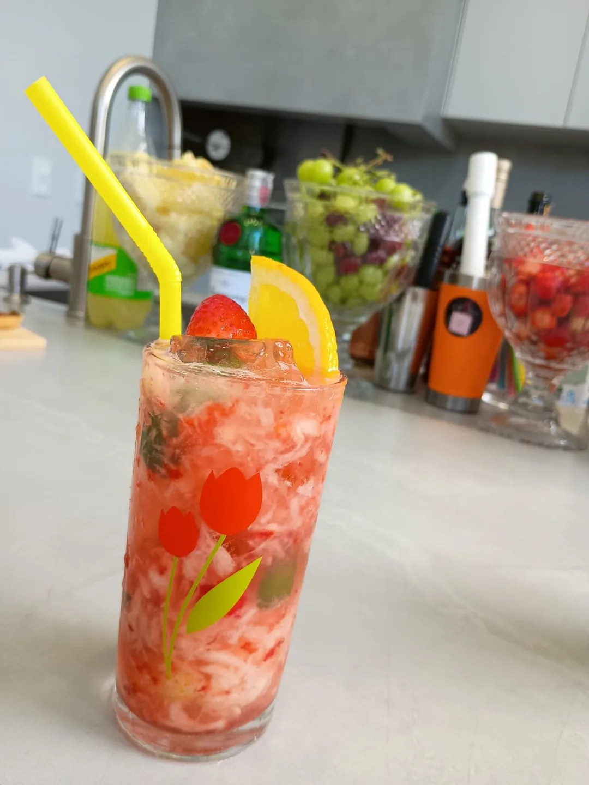

LEVE · CÍTRICO · VIBRANTE
01 / PRODUTOS · CARDÁPIO DE DRINKS
Qual vai ser
o seu drink?
Caipirinhas, clássicos, batidas e opções sem álcool para a sua festa.

02 / CARDÁPIO DO WITT
Escolha seus favoritos.
Toque no + para incluir os drinks no orçamento da festa.
FRUTADO · FRESCO · ENVOLVENTE
Caipirinha de morango
CÍTRICO · BRASILEIRO · REFRESCANTE
Caipirinha de limão
Arraste para descobrir os drinks →
03 / NO BALCÃO
Frutas, ingredientes e cardápio.
Detalhes das montagens do Witt Bar.